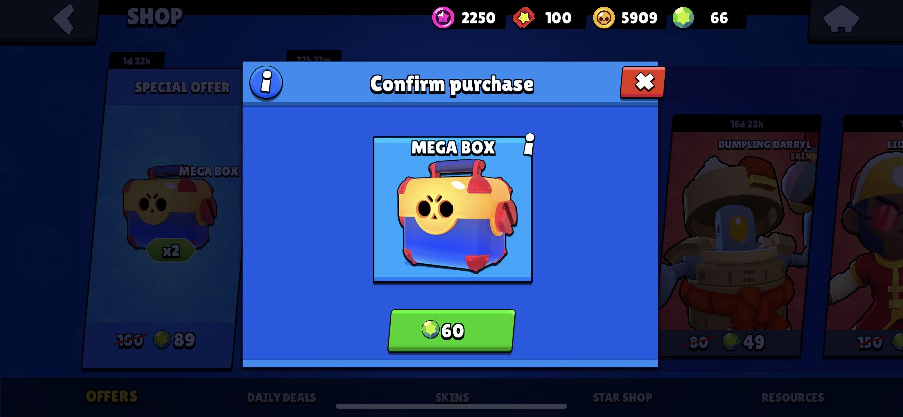

History
The history of Brawl Stars include major game changes
that have affected the game greatly through gameplay aspects.
Some game changes include the removal of Megaboxes, the adding of
Powers 10 and 11, and the introduction of hypercharges.
Megaboxes
Megaboxes used to be a major role within Brawl Star's rewarded
system. Currently, the game includes Starr Drops, a pinata
that rewards the player with a currency such as coins, powerpoints, and gems,
all with different uses. Before, Brawl Stars used Megaboxes
within their reward system, where the player would be able to
recieve multiple rewards but in smaller amounts. This would also
mean there was higher rates of recieving a rarer reward such as
skins, pins, or new brawlers.
Power 9
Brawlers are the character within the game that you play as. Upgrading
them with coins and powerpoints allows them to be stronger in health
and damage. In the earlier stages of Brawl Stars, the max level would be
Power 9. Now, the max level has been increased to Power 11, allowing
the brawler to be much stronger. This also meant more currency is being
put into the brawler, encouraging the player to play for rewards more often.
Hypercharges
Brawl Star's game mechanics have not changed much throuhout the updates,
but the addition of Hypercharges impacted the game and how you play heavily.
Brawlers have two attacking buttons. The main one is the attack button,
shooting or punching. The second is the super, a bigger attack charged
by attacking. These allow brawlers to be much more unique. Hypercharges
sprout from supers, they take longer to charge but within the state
of a hypercharge you recieve buffs and your super has added components.
The feature is awfully new, as only a handful of brawlers have them.
They are expensive to purchase with coins but change the way you play
the brawler heavily.
